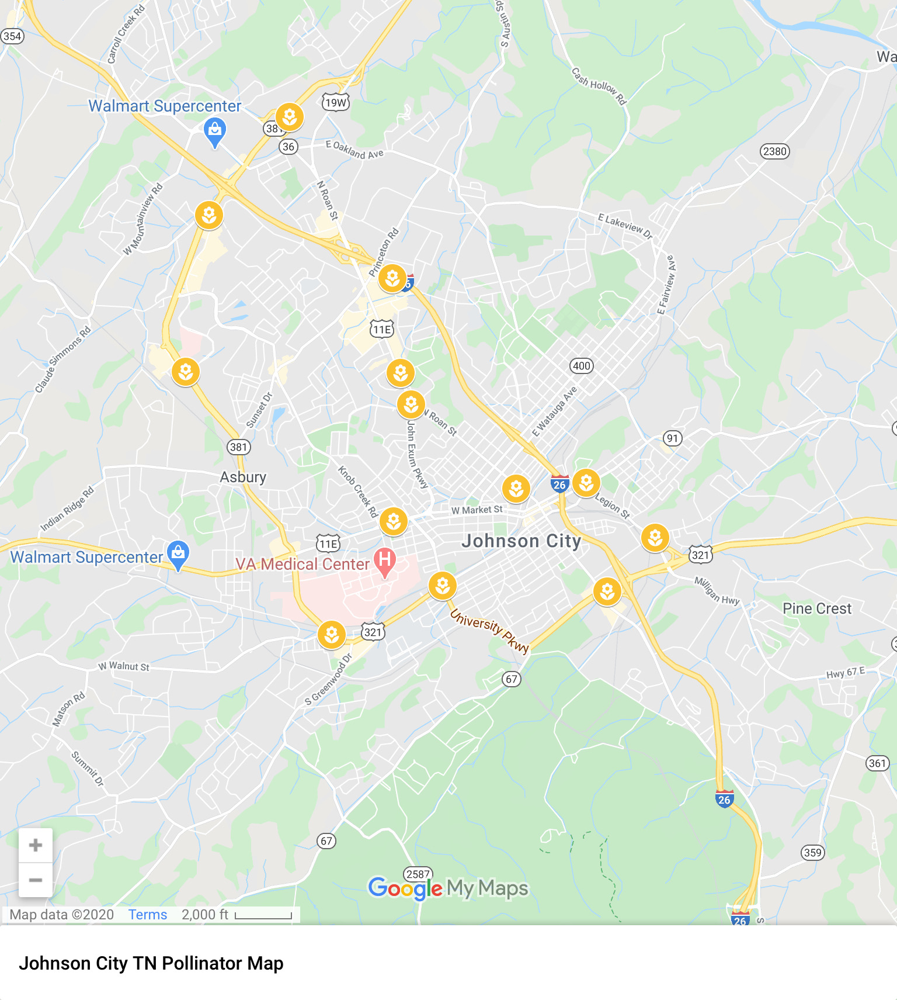

I decided to choose my town for this requirement because my town and all of our country is an endangered habitat for pollinators.
There is so much going on about pollinators in my town! There is a program called 'What's the Buzz', and they are putting pollinator gardens all over my town! Here are some links to things about pollinators where I got information for my badge:
a link to Bee Basics: An introduction to our native bees
a link to What's The Buzz facebook page
a link to the pollinator map
